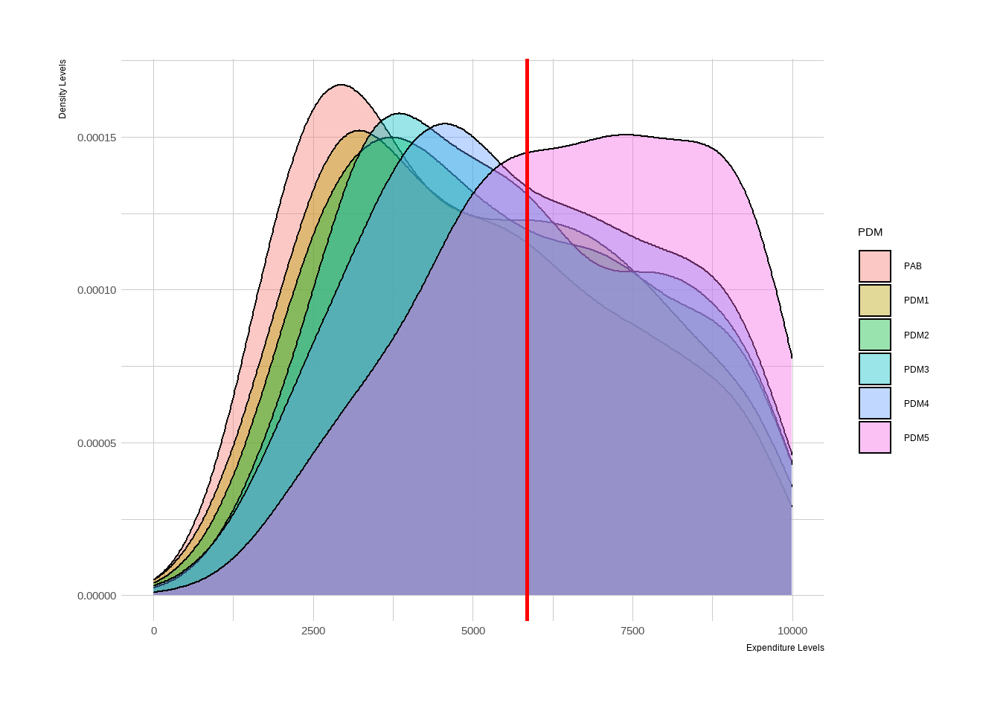
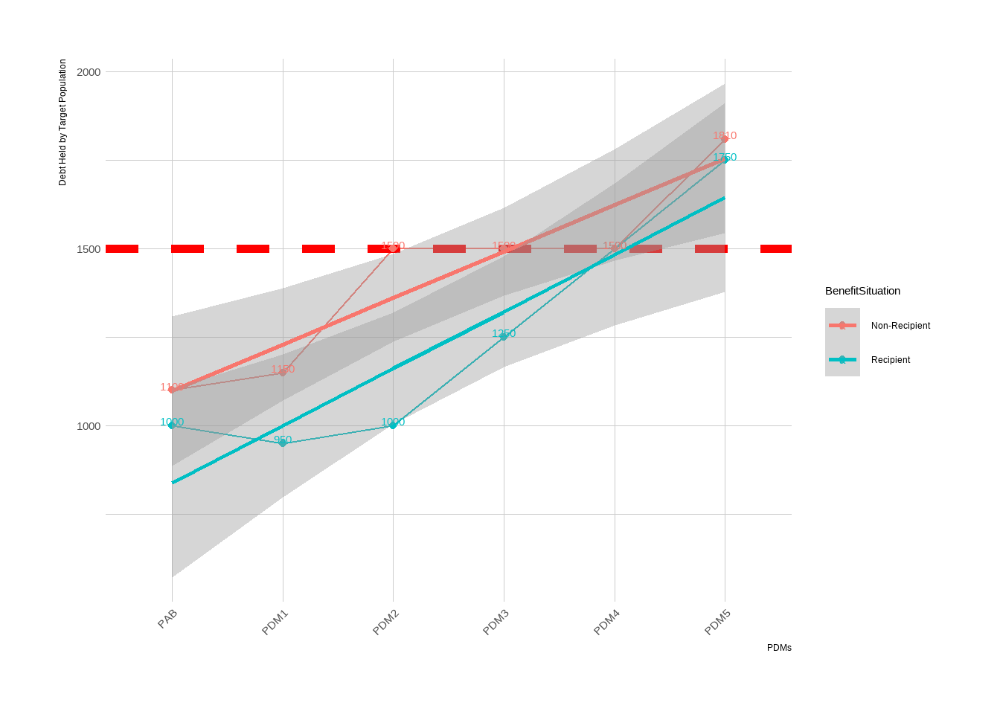

Chapter 5 Creating a Dashboard with R
Dashboards are very important communication tools, especially with management end. They like to see numbers and digestible graphs. Personally, selecting correct tool for dashboards are best approach. Two big rivals are in play lately, PowerBI and Tableau. I do personally like PowerBi for simplified dashboards. If your team uses MS Teams, there is an embed option, where you can put your dashboards as tabs within teams channels. Makes life of your manager and related teams easier.
R presents few options as shiny or flexdashboard. Flexdashboard is easy to use and learn. Let me quickly introduce you some of my best-in-use graphs. All these data are dummy and made up, so do not focus on making sense, focus on the visualts itself.
For me, there are several pillars for cash-based programme monitoring. By order;
- Income and expenditure
- Classification (region, nationality etc.) based income and expenditure, if available
- Log frame programme indicators
- Indicators by time (if available, if have more than 2 PDMs-data collection)
- Correlation and Regression analysis of core indicators
- Transfer value analysis
- Food security
5.1 Core Pillars and Codes of Visuals of a Dashboard
5.1.1 Income and Expenditure
Same graph can be made for income as well. Here, one can see the distribution and density levels of the expenditure, reflected by PDMs. Main takeaways will be;
- If curve is getting skewed towards right, one can assume that expenditure(income) levels are increasing by PDMs.
- Draw a line on the median point. That will reflect you an understanding of where the middle is. If you are to report, report that line.
- Tops are important. If curve has two tops, means that there is two group within those expenditure(income) levels. So population is not homogen.
- If heigh of distribution is getting lower and lower, means that some households are moving from middle-section to lower or upper sections of expenditure(income).
More takeaways can be noted with this graph. Amazing visual to understand the levels and story(if have more than two PDms) of the variable.
pdmbt %>% filter(x_total < 10000) %>%
ggplot(aes(x=x_total, group=PDM, fill=PDM)) +
geom_density(adjust=1.5, alpha=.4) +
theme_ipsum() +
geom_vline(xintercept = median(pdmbt[ pdmbt$PDM=="PDM1" ,]$x_total),color = "red", size = 1) +labs(x ="Expenditure Levels", y = "Density Levels")
5.1.2 Income and Expenditure, Disaggregated by Cluster
Comparing latest two PDMs or latest PDM makes this viz easy to read. Also it does make sense not to go backwards, there should be a limit. As mentioned, last two seems fine.
pdmbt %>% filter(PDM=="PDM4" | PDM=="PDM5") %>% filter(Income < 7500) %>% filter(BenefitSit=="Recipient") %>%
ggplot(aes(x = stratum, y = Income))+
geom_boxplot(aes(fill = stratum), show.legend = FALSE) +
geom_density(adjust=1.5, alpha=.4) +
theme_ipsum() +labs(x ="Regions", y = "Income Levels") + theme(legend.position = "none") + facet_grid(. ~ PDM)+coord_flip()5.1.3 Reporting Programme Indicators
Static Reporting
For reporting programme log frame indicators, there are two steps. For the first step, report them as success=target, warning=%10 below baseline, danger=%20 below baseline. Report indicators one by one with same method, use flex dashboard, and use page vertically. I am giving an example for FCS. Same coding can be applied to all SMART indicators of log frames.
gauge(
pi %>% filter(PDMs=="PDM5" & BenefitSituation =="Recipient") %>% dplyr::select(FCS) %>% colMeans(na.rm = TRUE) %>% as.vector(),
min=0,max=112,
gaugeSectors(success = c(63,65),
warning = c(41,62),
danger = c(0,41))
)Dynamic Reporting
If you have more than one PDM (PAB / baseline) it does makes sense to report this all together, including confidence levels. From graph below you can easily interpret:
- Trend of indicator.
- %95 CI of indicator, where it may land in next PDM.
- Comparison of control and treatment group.
pi %>% filter(Programme == "ProgrammeA") %>%
ggplot(aes(x=PDMs, y=Debt, group=BenefitSituation, color=BenefitSituation)) +
geom_line() +
geom_point() +
labs(x = "PDMs",
y = "Debt Held by Target Population") +
theme_ipsum() +
theme(axis.text.x = element_text(angle = 45, vjust = 1, hjust = 1)) + geom_hline(yintercept=1500, linetype="dashed",
color = "red", size=2) +
geom_point() +
geom_smooth(method = "lm") +
theme(axis.text.x = element_text(angle = 45, vjust = 1, hjust = 1)) +
geom_text(aes(label=Debt), vjust=0)
5.2 Preparing Outcome-Activity Based X-Table
Probably there is a better way to report this, but this is how I do it. If you know a better way to make a Gannt; please do contact me!
library(DiagrammeR)## Warning: package 'DiagrammeR' was built under R version 4.2.2#title Monitoring and Evaluation Outcome Indicators
mermaid("
gantt
dateFormat YYYY-MM-DD
section PDMs
PDM5+CPDM1 :done, first_1, 2022-06-01, 2022-11-01
PDM6+CPDM2 :active, first_2, 2022-11-01, 2023-01-15
PDM7+CPDM3 : first_3, 2023-01-16, 2023-04-15
section FGDs
FGD1, Food Security :crit, done, import_1, 2022-04-01, 2022-05-01
FGD2, Shelter and TV :crit, done, import_2, 2022-08-01, 2022-09-01
FGD3, Topics TBD :crit, import_3, 2022-12-01, 2023-01-01
FGD4, Topics TBD :crit, import_3, 2023-02-01, 2023-03-01
section OSMs
On Site Monitoring :active, extras_1, 2022-10-01, 2023-04-01
")This Gannt is a must to follow-up activities mentioned in M&E plan and programme proposal. I strongly advise to make one during designing M&E plan and costs.
This marks the end of this section. Main takeaways are:
Use flexdashboard or shiny (I don’t know how to use shiny, tho it may be better than flex dashboard) to report indicators, give clear messages and tailor graphs for different audience.
I reflected few visuals that I like to use. You can expand this and use different version as well.
Carefully track down indicators. They must speak with each other and reflect a full story of what is happening with target group and programme efficiency.
There are some apps and programmes such as ActivityInfo (https://www.activityinfo.org/) where you can key entry your indicators to follow up and some more details. Further, you can link any intelligence tool like PowerBI or Tableau to create-reflect dashboards. Of course most of these tools costs money. Building these tools is not a hard stuff to pull, so I would encourage M&E analysts to always have an indicator track sheet and with a dashboard.
Reflect indicators that helps you to explain trends in your core log-frame indicators. Select important variables to fill the gaps in the puzzle. For me, expenditure and income always a piece of puzzle to comment on log frame indicators as we are usually track down socio-economic indicators.
Reflecting MEB and programme coverage (if you are in cash modality) is a great indicator to understand if current cash amount is enough or not. Always reflect MEB, if available, and GAP-Coverage graphs in your dashboards.